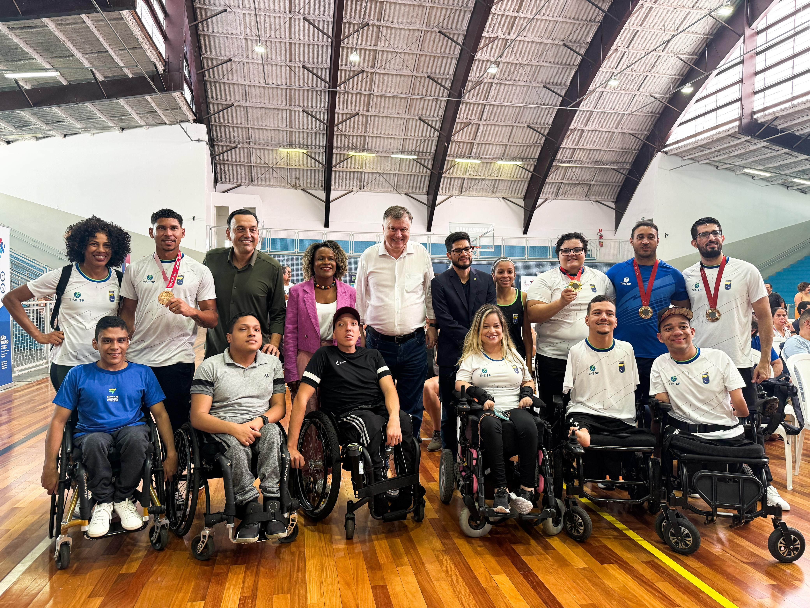

Jogos Paralímpicos de 2026

Milão e Cortina d’Ampezzo, na Itália, sediarão os Jogos Olímpicos e Paralímpicos de Inverno 2026, após vencerem a votação do Comitê Olímpico Internacional. Os Jogos Paralímpicos ocorrerão de 6 a 15 de março e prometem impulsionar a inclusão social e a sustentabilidade. O presidente do Comitê Paralímpico Internacional, Andrew Parsons, destacou a importância do evento para o esporte. Na última edição, em PyeongChang 2018, 567 atletas de 48 países participaram, incluindo três brasileiros.
Desenvolvimento Paralímpico ultrapassa 200 inscritos

A Secretaria de Esportes, em parceria com a Secretaria dos Direitos da Pessoa com Deficiência, iniciou o Programa de Desenvolvimento Paralímpico no Complexo Baby Barioni, reunindo mais de 200 profissionais de Educação Física até 21 de fevereiro. O programa visa inclusão e qualificação profissional no paradesporto, tendo formado mais de 11 mil profissionais com R$ 18 milhões investidos. Neste ano, inclui basquete em cadeira de rodas e goalball, além de outras modalidades. Em 2024, bateu recorde com 4.211 profissionais capacitados. O Estado de São Paulo reforça o compromisso com a inclusão e o desenvolvimento do esporte paralímpico.